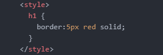
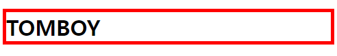
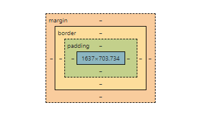

박스모델 - style 태그에서 border 속성의 style, width, color 등을 설정해주면 만들어짐.


태그의 부피감을 확인할 수 있다.
어떤 태그는 화면 전체를 쓰고, 어떤 태그는 부분을 쓴다.
- 화면 전체를 쓰는 태그 : block level element
- 자기 자신만큼의, 컨텐츠 크기만큼을 갖는 태그 : inline element
style 태그의 display 속성에, 각각 반대되는 inline과 block을 쓰면, 화면을 차지하는 기존의 비율이 달라진다. inline은 block이 되고, block은 inline이 된다.
+ 태그가 안보이게 하는 법 - display:none;

(마우스 우클릭-검사(inspect)시 볼 수 있는 화면.)
- 컨텐츠의 크기 지정 : width, height
- 컨텐츠와 바깥 테두리(박스 생성부분)의 간격 : padding
- 테두리와 다른 테두리의 간격 : margin
+ CSS에서 주석 다는 법: /* */